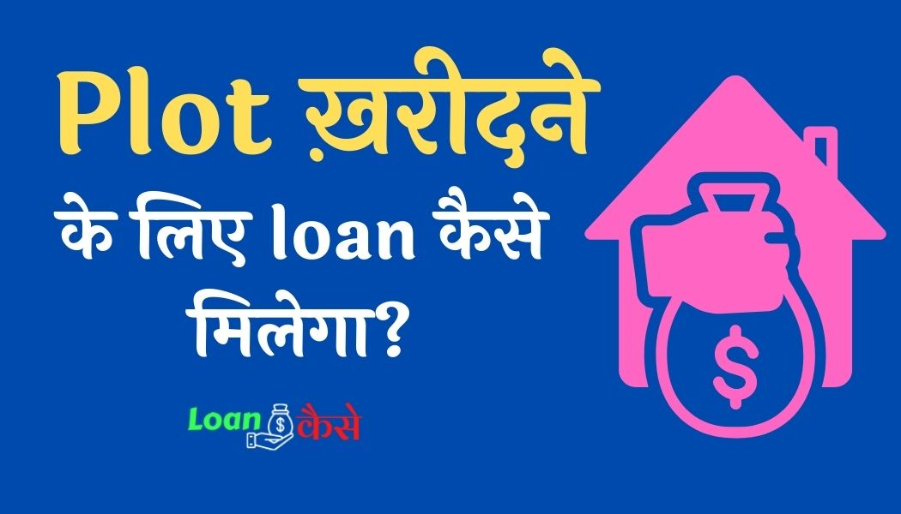

दोस्तों आज हम एक बहुत ही महत्वपूर्ण लोन के टॉपिक पर बात करने वाले हैं कि क्या बैंक जो है वह आपको प्लॉट खरीदने के लिए लोन दे सकती है या नहीं अगर प्लॉट खरीदने के लिए लोन दे सकती है तो आपको प्लॉट खरीदने के लिए लोन कैसे मिलता है यह भी हम बताने वाले हैं।
दोस्तों यह सवाल मुझसे बहुत ही ज्यादा पूछा जाता है की प्लॉट खरीदने के लिए लोन कैसे मिलता है तो आइए आज हम इसी सवाल का जवाब इस पोस्ट में देते हैं कि आप किस तरह से प्लॉट खरीदने के लिए लोन ले सकते हैं, क्योंकि आज के समय में प्लॉट सब खरीदना चाहते हैं लेकिन पैसे सभी के पास नहीं होते हैं ऐसे में अगर आपका भी सपना खुद का प्लॉट खरीदने का है तो हमारे इस पोस्ट को अंत तक पढ़िए, इसमें आपको प्लॉट खरीदने से लेकर उस प्लॉट के लिए लोन लेने से संबंधित सभी जानकारी दी गई है। चलिए स्टार्ट करते हैं :-
Jameen Plot Kharidne Ke Liye Loan Kaise Le?
जमीन या प्लॉट खरीदने के लिए लोन कैसे लेना है यह जानने से पहले हमको प्लॉट लोन के बारे में कंप्लीट जानकारी ले लेनी चाहिए क्योंकि बिना जानकारी के अगर आप सीधे प्लॉट लोन लेने चले जाएंगे तो हो सकता है कि आपको बाद में परेशानी का भी सामना करना पड़े।
इसीलिए नीचे हमने प्लॉट लोन से संबंधित कुछ महत्वपूर्ण बातें हैं और प्लॉट लोन के लिए अप्लाई कैसे करना है इसके भी कंप्लीट इंफॉर्मेशन दिए हुए हैं तो आप एक-एक करके सभी को पढ़िए।
तभी आप समझ पाएंगे कि प्लॉट खरीदने के लिए लोन कैसे लिया जाता है।
{kind=link}

प्लाट लोन क्या है?
दोस्तों प्लॉट लोन की बात करें तो प्लॉट लोन भी एक तरह का होम लोन ही है क्योंकि अगर आप खुद का घर बनाना चाहते हैं तो सबसे पहले वह जगह आपको देखना पड़ता है जहां आपको घर बनाना है ,इसीलिए प्लॉट भी आपके घर का एक महत्वपूर्ण पार्ट होता है, जब तक आपके पास कोई प्लाट नहीं होगा आप अपना घर नहीं बना सकते हैं और अगर कहीं से प्लॉट भाड़ा लेकर के भी आप अपना घर बनाते हैं तो वह आपका खुद का घर नहीं कहलाएगा।
ऐसे में आपको घर के साथ-साथ प्लॉट भी खुद का लेना पड़ता है इसी प्लाट को खरीदने के लिए जब हमारे पास पैसे नहीं होते हैं तो हम बैंक के पास लोन लेने जाते हैं और इस तरह के लोन को हम प्लॉट लोन या होम लोन कहते हैं।
दोस्तों जैसा कि हमने बताया कि प्लॉट लोन होम लोन की तरह ही है या यूं कहें तो होमलोन ही है इसका लोग ग़लत फ़ायदा उठा रहे थे,
दोस्तों आज से कुछ साल पहले कई सारे बैंक से लोग होम लोन ले लेते थे और उस होम लोन के पैसे से कहीं पर प्लॉट खरीद लेते थे प्लॉट खरीद लेने के बाद उसपर घर नहीं बनाते थे, सिर्फ प्लॉट खरीदकर कुछ समय के लिए छोड़ देते थे।
जैसा कि आपको पता है इंडिया में प्लॉट के दाम दिनोंदिन बढ़ते ही जा रहे हैं ऐसे में लोग होम लोन के पैसे से जो प्लॉट खरीदते थे उस प्लॉट का दाम कुछ समय के बाद 2 गुना या 3 गुना हो जाता था और जब उस प्लॉट का दाम बहुत ज्यादा बढ़ जाता था तब वह प्लॉट बेच लेते थे।
प्लॉट को बेचकर होम लोन का पैसा वापस कर देते थे और होम लोन बंद करा देते थे और बाकी पैसा अपने पास मुनाफे के तौर पर रख लेते थे ऐसे में यह एक मोटी कमाई करने वाला बिजनेस बन चुका था और इसमें पैसा भी नहीं लगाना पड़ता था बैंक का पैसा कुछ दिन के बाद बैंक को ही लौटा देना पड़ता था।
यह बिजनेस काफी ज्यादा फैल चुका था जिससे बैंकों को काफी ज्यादा नुकसान होती थी उनका होम लोन समय से पहले क्लोज हो जाता था और उन्हें फायदा नहीं होता था धीरे-धीरे इस घटना का पता रिजर्व बैंक ऑफ इंडिया को चला उसके बाद रिजर्व बैंक ऑफ इंडिया ने होम लोन में कुछ बदलाव कर दिए।
प्लॉट लोन में क्या बदलाव किए गए?
जैसा कि हमने ऊपर बताया कि लोग प्लॉट लोन का गलत फायदा उठा रहे थे सिर्फ प्लॉट खरीद कर उस पर घर नहीं बनाते थे ऐसे में रिजर्व बैंक ऑफ इंडिया ने एक नियम बना दिया कि अगर आप कोई भी होम लोन या प्लॉट लोन लेते हैं तो लोन लेने के बाद आपको 18 महीने के अंदर उस पर घर बना लेना है।अगर 18 महीने के अंदर उस पर घर नहीं बनाएंगे तो आपको एक्स्ट्रा ब्याज दर चुकाना होगा, इस तरह से प्लॉट की खरीद बिक्री मैं थोड़ी सी कमी आ गई है।
प्लाट लोन लेने के क्या फ़ायदे हैं (Advantages Of Plot Loan )?
कम ब्याज दर का होना
दोस्तों प्लॉट लोन के फायदे की बात करें तो बैंक कम से कम ब्याज दर पर जमीन खरीदने के लिए या यूं कहें तो प्लॉट खरीदने के लिए और घर बनाने के लिए दोनों चीजों के लिए लोन प्रोवाइड करती है और यह लोन अन्य लोन के मुकाबले कम दर पर आपको उपलब्ध हो जाता है, क्योंकि आज के समय में प्लॉट खरीदना और उस पर घर बनाना सबके बस की बात नहीं है इसमें काफी ज्यादा पैसे लगते हैं इसीलिए प्लॉट लोन उन लोगों के लिए काफी ज्यादा फायदेमंद है जो लोग एक साथ प्लॉट और घर दोनों का पैसा नहीं जमा कर सकते हैं वह लोग इस लोन को ले सकते हैं और अपने खुद के घर का सपना पूरा कर सकते हैं।
इनकम टैक्स में छूट मिलना
प्लॉट लोन क्या यह भी एक फायदा है कि इसमें आपको इनकम टैक्स बेनिफिट मिल जाता है जितने अमाउंट का आपका किसी एक फाइनेंसियल ईयर में पेमेंट किए रहेंगे उतने अमाउंट का आप को टैक्स में छूट मिल जाती है।
जमीन/प्लॉट लोन लेने से पहले कुछ महत्वपूर्ण बातें जान लें ।
दोस्तों अगर आप जमीन या प्लॉट लोन लेने जा रहे हैं तो आपको कुछ बातें प्लॉट लोन लेने से पहले जान लेनी चाहिए तभी आपको प्लॉट लोन के लिए अप्लाई करना चाहिए:-
- अगर आप यह सोच रहे हैं कि आप प्लॉट लोन लेकर के उस पर कोई बिजनेस करेंगे तो ऐसा आप नहीं कर सकते प्लॉट लोन उस प्लॉट के लिए दिया जाता है जिस प्लॉट पर आप अपना खुद का घर बनाएंगे।
- दूरदराज गांव में प्लॉट खरीदने के लिए आप लोन नहीं ले सकते हैं यूं कहे तो आप ऐसे क्षेत्र में प्लॉट खरीदने के लिए लोन ले सकते हैं जो थोड़ा सा गांव से हटके हो।
- अगर आप प्लॉट लोन ले रहे हैं तो आप उस प्लॉट लोन के पैसे को सिर्फ प्लॉट खरीदने और घर बनाने के लिए ही यूज कर सकते हैं बाकी और किसी भी काम के लिए इस पैसे का उपयोग नहीं कर सकते।
- जिस प्लॉट के लिए आपने लोन लिया है उस प्लॉट पर किसी भी तरह का कमर्शियल बिल्डिंग नहीं बना सकते हैं।
- कुल मिलाकर यूं कहें तो आप जमीन या प्लॉट लोन व्यक्तिगत खुद का घर बनाने और उसमें रहने के लिए ही ले सकते हैं।
कितने लोन अमाउंट का प्लॉट लोन आपको लेना चाहिए?
दोस्तों अगर आपने सोच रखा है कि आपको प्लॉट लोन लेना है, तो आपको सबसे पहले यह पता करना होगा कि आपके प्लॉट खरीदने और उस पर घर बनाने तक का कुल खर्चा कितना आने वाला है उसी के हिसाब से आपको बैंक जाकर लोन के लिए अप्लाई करना होगा क्योंकि जब तक आप को अपने पूरे खर्चे के बारे में पता नहीं चलेगा तब तक आप नहीं जान पाएंगे कि आपको कितना लोन लेना चाहिए।
- दोस्तो आपको सबसे पहले यह पता करना है कि आपको कितने एरिया का प्लॉट चाहिए जिसमें आपको घर बनाना है।
- उसके बाद आपको वह जगह देखना चाहिए जहां आप प्लॉट खरीदना चाहते हैं और घर बनाना चाहते हैं।
- प्लॉट के लिए जगह देख लेने के बाद आपको उस प्लॉट का रेट पता करना है कि आपको उस प्लॉट को खरीदने में कितने पैसे लगेंगे।
- अब आपको यह डिसाइड करना है कि आप उस प्लॉट पर किस तरह का घर बनाना चाहते हैं और आपको उसका एस्टीमेट बनवाना है इससे आपको यह भी पता चल जाएगा कि आपको घर बनाने में कितना पैसा लगेगा।
- आप जितने अमाउंट का लोन अप्लाई करेंगे उसका केवल 60% आपको लोन अप्रूव होगा।
- अब आपको यह देखना है कि आप सिर्फ प्लॉट खरीदना चाहते हैं या उस पर घर भी बनाना चाहते हैं अगर आप सिर्फ प्लॉट खरीदना चाहते हैं तो प्लॉट के पैसे जितना ही लोन के लिए अप्लाई करें और अगर उस प्लॉट पर आप घर भी बनाना चाहते हैं तो दोनों अमाउंट के लिए लोन अप्लाई करें।
प्लॉट के लिए लोन लेने से पहले ब्याज दर को देख लेना भी ज़रूरी है ।
प्लॉट लोन पर लगने वाले ब्याज दर की बात करें, तो चुकी प्लॉट लोन भी होम लोन ही है इसीलिए इस पर होम लोन का ही ब्याज लगता है और जैसा कि आपको पता है की प्लॉट लोन या होम लोन पर लगने वाला ब्याज 7% से शुरू होता है और 10% तक लगता है यह बैंक फरवरी निर्भर करता है कि कौन सा बैंक कितना ब्याज दर पर आपको प्लॉट लोन प्रोवाइड करता है।
प्लाट के लिए लोन आप कौन-कौन से बैंकों से ले सकते हैं ?
| SBI Plot/Home Loan | HDFC Plot/Home Loan | ICICI Plot/Home Loan |
| Corporation Bank Plot/Home Loan | Uco Bank Plot/Home Loan | Union Bank Plot/Home Loan |
| Axis Bank Plot/Home Loan | Kotak Plot/Home Loan | Fullerton India Plot/Home Loan |
| HSBC Plot/Home Loan | Central Bank Plot/Home Loan | Dena Bank Plot/Home Loan |
| Bank of India Plot/Home Loan | United Bank Plot/Home Loan | Standard Chartered Plot/Home Loan |
| Bajaj Finserv Plot/Home loan | HDBFS Plot/Home Loan | Bank of Baroda Plot/Home Loan |
| Allahabad Bank Plot/Home Loan | Canara Bank Plot/Home Loan | IDBI Plot/Home Loan |
| LIC HFL Loan | Citibank Plot/Home Loan | Bank of Maharashtra Plot/Home Loan |
| Andhra Bank Plot/Home Loan | P & S Bank Plot/Home Loan | Syndicate Bank Plot/Home Loan |
| Vijaya Bank Plot/Home Loan | Indian Bank Plot/Home Loan | Federal Bank Plot/Home Loan |
बैंक प्लाट लोन: पात्रता (Plot Loan Eligibility in Hindi)
- आवेदक कम से कम 18 वर्ष और अधिक से अधिक 70 वर्ष का होना चाहिए
- आवेदक का एक निश्चित मंथली इनकम होना चाहिए।
- आवेदक का पहले से कोई ऐसा लोन नहीं होना चाहिए जिसमें समय पर EMI Pay नहीं किया गया हो।
- आवेदक का CIBIL Score अच्छा होना चाहिए।
- आवेदक के ऊपर किसी भी प्रकार का किसी बैंक द्वारा कोई बकाया जैसे कि लोन का बकाया या क्रेडिट कार्ड का बकाया नहीं होना चाहिए यूं कहें तो एक अच्छी लायबिलिटी होनी चाहिए।
प्लाट खरीदने के लिए कितना लोन मिल सकता है?
प्लॉट खरीदने के लिए आपको 15 करोड़ से लेकर 20 करोड़ तक का लोन मिल सकता है लेकिन सबको 15 से 20 करोड़ का लोन नहीं मिलता है लोन का अमाउंट डिपेंड करता है कि आपको कितने रुपए के लोन की आवश्यकता है और आप कितने तक के लोन अमाउंट के लिए एलिजिबल हैं।
प्लॉट खरीदने के लिए आपको कितना लोन मिलेगा यह पूरी तरह से आपके मंथली इनकम और लोन अमाउंट पर निर्भर करता है।
प्लाट लोन की ब्याज दर और भुगतान अवधि कितनी होती है?
- जैसा कि पहले ही बताया इसमें 7% तक ब्याज दर आपको देना पड़ता है।
- 18 वर्ष से लेकर 70 वर्ष तक आप लोन का रीपेमेंट कर सकते हैं।
- भुगतान अवधि की बात करें तो ज्यादा से ज्यादा 10 साल यानी 120 महीने होते हैं आप चाहे तो कम भी यूज कर सकते हैं।
प्लाट लोन EMI कैलकुलेटर-(Plot Loan EMI kaise Calculate karen)
ईएमआई कैलकुलेटर की बात करें तू किसी भी वेबसाइट पर जाकर आप अपना लोन अमाउंट , ब्याज दर और Tenure डाल कर अपना यह माही चेक कर सकते हैं।
उससे पहले आपको पता लगाना होगा कि आपको कितना रेट ऑफ इंटरेस्ट चार्ज किया जा रहा है।
प्लाट लोन लेने के लिए जरूरी कागजात कौन कौन से हैं ?
- कंपलीट भरा हुआ एप्लीकेशन फॉर्म।
- दो पासपोर्ट साइज फोटो ज्यादा भी लग सकता है।
- पैन कार्ड (Pan Card)
- पहचान पत्र ( आधार कार्ड, वोटर आईडी कार्ड, पासपोर्ट, या कोई अन्य पहचान पत्र) इनमें से कोई एक लगा सकते हैं।
- कम से कम पिछले 2 साल का आइटीआर ( इनकम टैक्स रिटर्न) या Form-16 देना होगा।
- पिछले 6 महीने का Salary Sleep या 2 साल का बैलेंस शीट देना होगा।
- बैंक अकाउंट स्टेटमेंट जिस बैंक में आपका सैलरी क्रेडिट होता है।
- ऐसेट ओर लायबिलिटी स्टेटमेंट।
प्लॉट जमीन लैंड लोन लेने के लिए ऑनलाइन आवेदन कैसे करें?
दोस्तों प्लॉट या लैंड लोन के लिए आप ऑनलाइन आवेदन कर सकते हैं लेकिन आपके लिए ज्यादा बेहतर होगा कि आप बैंक जाकर मैनेजर से मिलकर ऑफलाइन आवेदन करें क्योंकि ऑनलाइन से ज्यादा जल्दी ऑफलाइन आवेदन अप्रूव होगा तो आइए जानते हैं कि आप को जमीन या प्लॉट लोन के लिए आवेदन कैसे करना है।
- सबसे पहले आपको अपने प्लॉट के बारे में जानकारी ले लेनी है कि कहां आपको प्लॉट खरीदना है और उसमें कितने पैसे लगेंगे जैसा कि हमने ऊपर बताया हुआ है उसका एक प्रॉपर डिटेल बना लेना है कि कितना अमाउंट आपको उसमें खर्च होने वाला है।
- उसके बाद अपने सभी कागजात जिन कागजात को हमने ऊपर बताया हुआ है वह सेल्फ अटेस्टेड करके एक फाइल में लोन एप्लीकेशन फॉर्म के साथ लगाना है।
- सभी कागजात कंप्लीट कर लेने के बाद आपको वह बैंक डिसाइड करना है जिससे आप लोन ले सकते हैं आप कोई भी बैंक यूज कर सकते हैं जो बैंक आपको आसानी से लोन दे दे।
- अब आपको उस बैंक के लोन डिपार्टमेंट या बैंक मैनेजर से जाकर अच्छी तरह से बात करनी है और अपने सारे डॉक्यूमेंट एप्लीकेशन फॉर्म के साथ उनको सबमिट कर देना है।
- कुछ दिनों के बाद बैंक मैनेजर आपको खुद बुलाएंगे तब तक वह आपके सारे डॉक्यूमेंट चेक कर चुके होंगे अगर सब कुछ सही रहेगा तो आपका लोन अप्रूव कर दिया जाएगा।
- अब वह लोन कितना अप्रूव होगा यह पूरी तरह से आपके एलिजिबिलिटी पर डिपेंड करता है।
खरीदे गए प्लॉट पर घर नहीं बनाया तो क्या होगा?
अगर आपने प्लॉट लोन ले रखा है और कुछ समय के बाद उस पर घर नहीं बनाया तो आपका ब्याज दर अपने आप ही बढ़ जाएगा यह लगभग 2 से 3% तक बढ़ जाएगा और वह लोन आपका एक कमर्शियल लोन में कन्वर्ट हो जाएगा इसीलिए आपको जितना जल्दी हो सके उस प्लॉट पर घर बना लेना चाहिए।
कंक्लुजन (निष्कर्ष):-
तो दोस्तों आज हमने देखा कि प्लॉट लोन क्या होता है प्लॉट लोन लेने के लिए क्या-क्या करना पड़ता है यूं कहें तो प्लॉट लोन से संबंधित लगभग हमने सारे चीजों को इस पोस्ट में कवर करने का कोशिश किया है अगर फिर भी कुछ आपके सवाल बाकी रह जाते हैं।
तो आप नीचे कमेंट कीजिए मैं आपके सवाल का जवाब जरूर दूंगा और अगर आपको हमारी यह पोस्ट प्लॉट खरीदने के लिए लोन कैसे लेते हैं अच्छी लगी हो तो नीचे कमेंट कीजिएगा और अपने दोस्तों के साथ शेयर जरूर कीजिएगा क्योंकि आज के समय में काफी सारे लोग ऐसे हैं जिनके पास पैसे नहीं है और उनका सपना है खुद का प्लॉट खरीद कर उस पर एक अच्छा घर बनाने का।